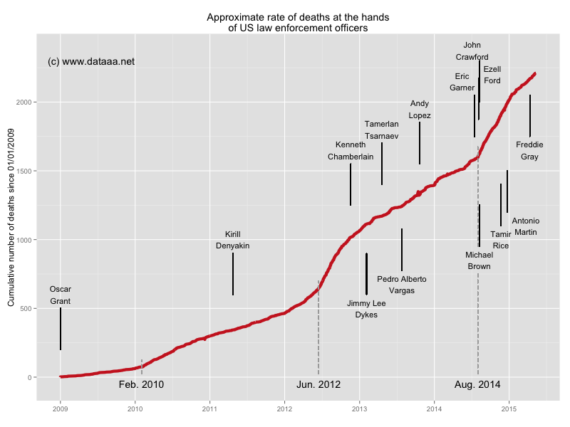

Police killings in the USA (pt. 2)
After a spate of new killings at the hands of law enforcement officials in the USA, particularly deaths that have occurred in police custody (notably those of Freddie Gray and David Dehmann) and after collisions with police vehicles, I wanted to look at whether the rate of deaths had increased recently. Using data from Wikipedia, and using R to scrape and process the data, I plotted the reported deaths over the last six years or so:

Note that these are reported deaths, and thus the data may not be complete.
We can see that the rate of reported deaths due to law enforcement officials in the US has increased dramatically, particularly in the last year or so. From the graph, three pickups in rate seem evident, in February 2010, June 2012 and August 2014. The most recent spike in numbers is particularly surprising, since the death of Michael Brown at the start of this period led directly to widespread public protests in Ferguson, Missouri, and across the country. Rather than curb police brutality, it seems to have continued at a steady (but elevated) rate for several months subsequently. During this period Tamir Rice was also shot and killed, leading to further protests in Cleveland. And only last month, Freddie Gray was killed in police custody in Baltimore, leading to prolonged protests and enforced curfews.
The good news is that people in authority are starting to take notice. The US Justice Department is now probing the behaviour of Baltimore Police and the UN Human Rights Council is making its concerns known.